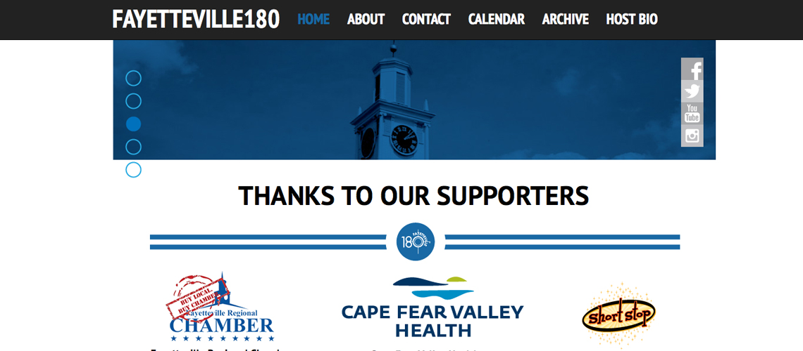
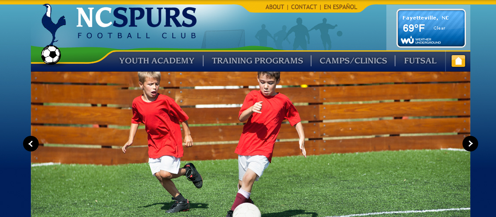
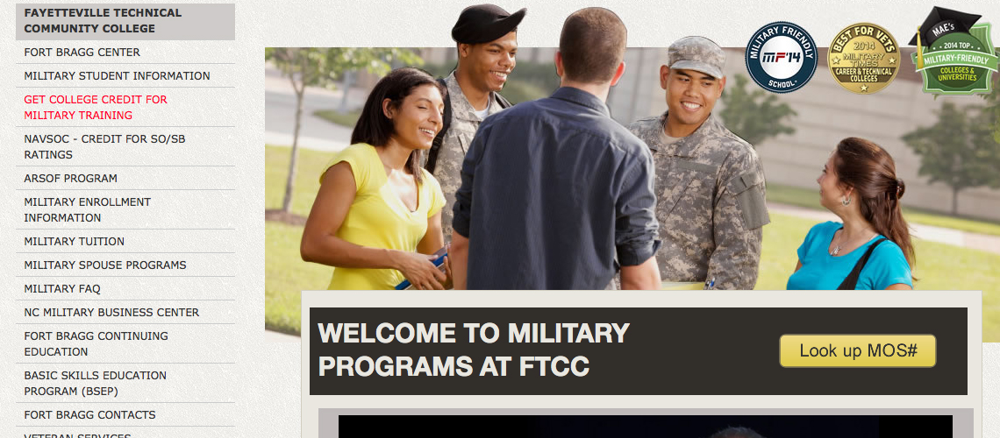
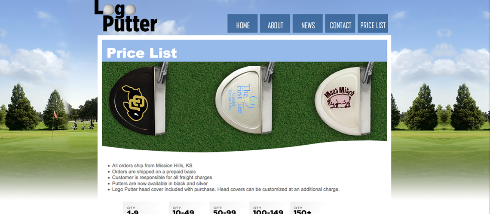
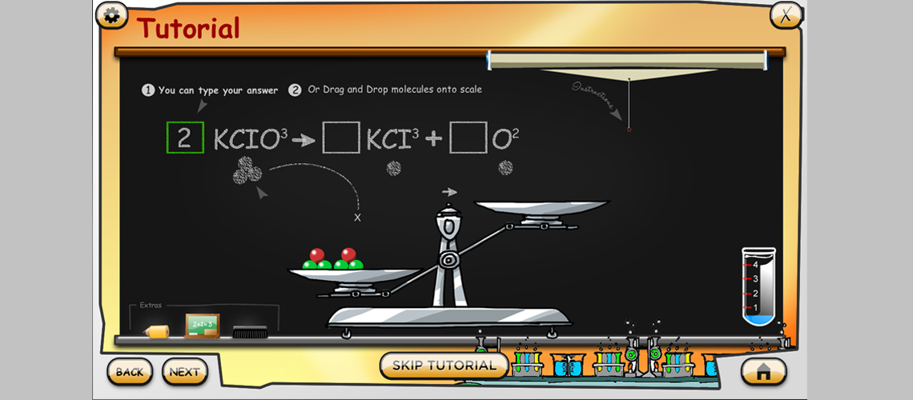
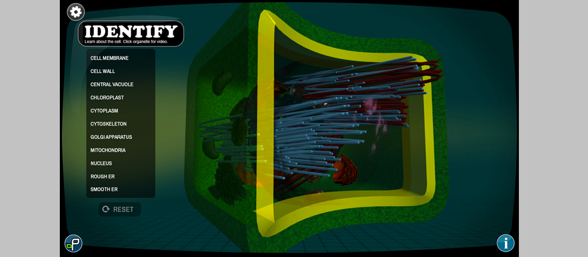
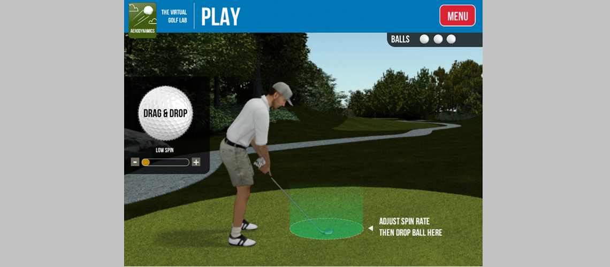
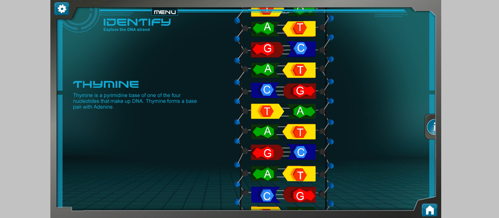
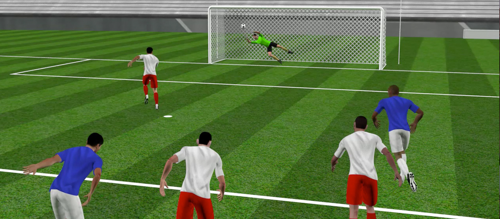
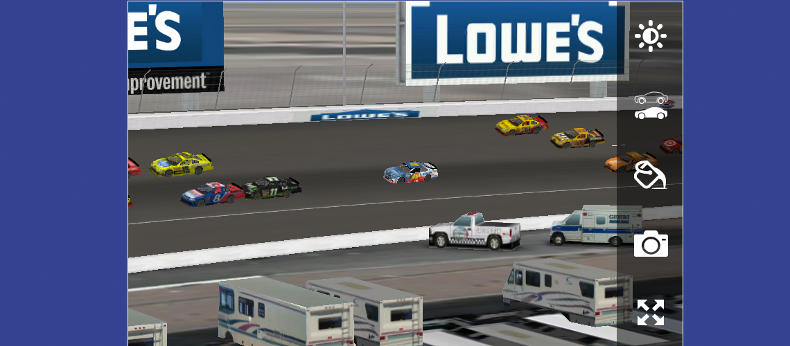

View my Best projects!
Virtual Learning Center Course Development

This project was for the North Carolina Community College System via Fayetteville Technical Community College. We developed five different online learning courses. The courses were Math 263 (Calculus), Sociology 210, Art 115, Biology 168 (Biology 1) and Biology 169 (Biology 2). We built these courses using Adobe Edge Animate, jQuery, HTML and CSS. The audio was produced in Adobe Audition. I was the Lead Web Developer, Audio Editor and Project Manager from the begninng of this project until delivery.
IndyCar '15

This project was one of two projects that I helped manage and develop for Verizon Wireless. Immersion was responsible for creating all of the 3D portion of this application along with the near real-time 2D racing experience. This application was a very large project and employed several technologies. We built the 3D assets in 3DS Max, Unity and programmed against them in C#. The 2D racing experience was created in Java for the Android platform and Objective-C for the iOS platform. I was the Lead 3D Developer, Project Manager and Unity Developer for this project. I was also responsible for application deployment, source control, code merging and quality assurance. I upheld these responsiblities from the beginning of the project until delivery.
NFL Official's Simulator

The NFL Official's Simulator was a demo application that Immersion created for the NFL. The goal was to create a 3D experience where the user can experience different scenarios in Football where a decision would have to be made by an official. The project was created in 3DS Max, Adobe Premiere, Unity3D and C#. I was a Programmer, Motion Capture Director, Quality Assurance and Project Manager from the beginning of the project to delivery.
Fayetteville180
Fayetteville180 is a video mini-series that is sponsored by Cape Fear Valley Health and the Fayetteville Regional Chamber of Commerce. Each 3 minute episode highlights future events in Fayetteville. I'm the Lead Developer for the website. I also set up the weekly email campaign. The website is created using BootStrap, HTML, CSS and jQuery.
NC Spurs Football Academy
This website is for a local soccer academy here in Fayetteville. They have been Immersion's client for at least two years. I was the Lead Developer for this website. This website is built in HTML, CSS, jQuery, PHP, MySQL and TinyMCE. I continue to be the Project Manager for this client.
FTCC Military Web Page - Phase 1
This website was developed for Fayetteville Technical Community College. The website was built to let members of the armed forces find out if their training can be applied towards college credit. I was the Lead Developer for this project. The website has since been updated and features both my work and new functionality. This site was built using HTML, CSS and JavaScript.
LogoPutter
This website was built for LogoPutter -- a company that sells golf putters with custom logos. I am the Lead Developer for this website and continue to serve as the Project Manager. This website was built in HTML and CSS.
Balancing Chemical Equations
This project was built for Fayetteville State University. It was one of the first full-fledged Unity3D applications. I was the Lead Developer for this project. This application was built using Unity3D, 3DS Max, FireWorks and C#.
Interactive Plant Cell
This project was bulit for Carolina Biological. The application's purpose is to show a "virtual plant cell" that the user can orbit around and learn about the various organelles. The user can also label the organelles and explore the cell. This application was created in Unity3D, 3DS Max, Fireworks and JavaScript (it has since been updated to C#). I was the Lead Developer and Project Manager for this project.
Aerodynamics
Aerodynamics is one of the five e-learning modules that Immersion Media created for the USGA. Each module takes a certain portion of applied physics and lets the user experience science as it relates to golf. Each application was built for iPad. My role was compiling each Xcode project and application deployment during both pre-production and production.
Interactive DNA Helix
The Interactive DNA Helix is a "sister" application to the Interactive Plant Cell. The application was built for Carolina Biological and allows the user to explore the different parts of a DNA strand. It also features a fun and fast-paced amino-acid matching game. I was the Lead Developer and Project Manager for the first phase of the application. Interactive DNA Helix was built in 3DS Max, Unity3D, Fireworks and C#.
Rules of Soccer - Penalty Kick
The Penalty Kick is one of several up-and-coming animations that are internal to Immersion Media. I served as the Motion Capture Director, Lead 3D Developer and Co-Project Manager. The animation was created in 3DS Max and After Effects. A separate Immersion employee created the player models and cleaned the final animations.
Lowe's Paint Scheme Evaluator
The Lowe's Paint Scheme Evaluator lets the client view a virtual paint scheme on the #48 car before the actual skin is applied. I've maintained this application since I have started working at Immersion Media. I am responsible for some of the car geometry, all 30+ paint schemes (UVW maps), most of the icons in the paint selection menu, and application deployment. As of 2013 I serve as the Lead Developer and Project Manager.